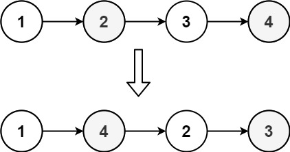
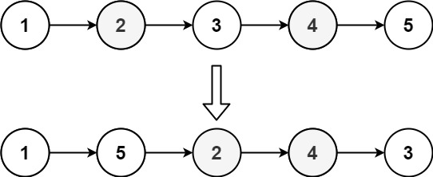

143. 重排链表
三步：快慢指针找中点，反转后半段，再把前后两半交替合并（前一个、后一个……）。
思路
- 快慢指针：
slow走一步、fast走两步，走不动时slow停在前半段最后一个结点（奇数个时前半段多一个）。 second = reverse(slow.next)反转后半段，紧接着slow.next = null断开前半段，否则最后会成环。- 交替合并：每轮先存好
n1、n2，再first.next = second、second.next = n1，两个指针各进一步。 - 后半段不会比前半段长，所以
second用完时就合并完了；链表为空或只有一个结点直接返回。
图解
最优解
1class Solution {2 public void reorderList(ListNode head) {3 if (head == null || head.next == null) return;4 // 1. 快慢指针找中点：slow 停在前半段的最后一个结点5 ListNode slow = head, fast = head;6 while (fast.next != null && fast.next.next != null) {7 slow = slow.next;8 fast = fast.next.next;9 }10 // 2. 后半段反转，并和前半段断开11 ListNode second = reverse(slow.next);12 slow.next = null;13 // 3. 前后两半交替接：前一个、后一个、前一个……14 ListNode first = head;15 while (second != null) {16 ListNode n1 = first.next, n2 = second.next;17 first.next = second;18 second.next = n1;19 first = n1;20 second = n2;21 }22 }23 24 private ListNode reverse(ListNode head) {25 ListNode prev = null;26 while (head != null) {27 ListNode next = head.next;28 head.next = prev;29 prev = head;30 head = next;31 }32 return prev;33 }34}题目
给定一个单链表 L 的头节点 head ，单链表 L 表示为：
L0 → L1 → … → Ln - 1 → Ln
请将其重新排列后变为：
L0 → Ln → L1 → Ln - 1 → L2 → Ln - 2 → …
不能只是单纯的改变节点内部的值，而是需要实际的进行节点交换。
示例 1：

输入：head = [1,2,3,4] 输出：[1,4,2,3]
示例 2：

输入：head = [1,2,3,4,5] 输出：[1,5,2,4,3]
提示：
- 链表的长度范围为
[1, 5 * 104] 1 <= node.val <= 1000
题面取自力扣当前版本。
数据快照 2026-11-04。题面版权归力扣所有，本站点仅供本人学习使用，请勿对外发布。